プログラムを2つほど提出しているが1つは断念したもので、もう少し時間をかけて作りたいものです。もう1つが今回の自由課題として提出したいものです。最初はExcelで計算するようなものを作っていたが、思うように行かない点があったので断念してしまった。選択したものをすべて計算できるようなプログラムを目指してプログラミングを行っていた。選択したセルをJFeildに入力されるようなリスナーをつけようと思ったのだが、うまく反応させることができなかった。選択したセルから情報を入手するのがとても大変だった。JFeildに直接入力しようとしても、入力できず、この改善策が思い浮かばなかった。なのでも少しシンプルなプログラムを作ることにした。
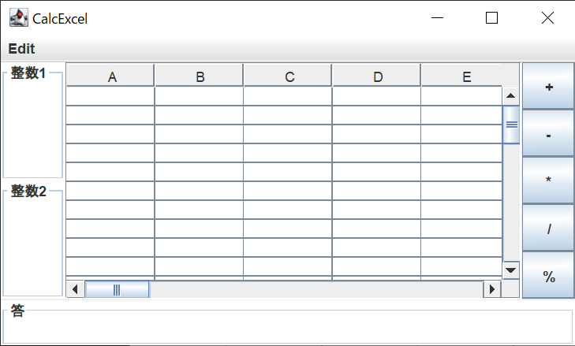 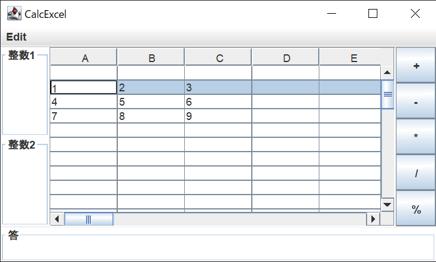そして、今回提出したいプログラムとしては、入力された2つの数に対する四則演算を行いそれぞれ出力するプログラムを作った。
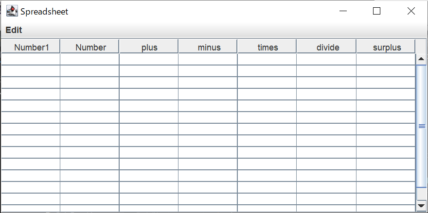まず計算したい値を所定の位置に入力する。表が変更されるたびリスナーが反応する仕様なので、計算したい値である片方の値を入力すると、もう一方の方の値に自動的に0が入力され計算されるようになっている。また四則演算に加え、剰余の計算も実装している。
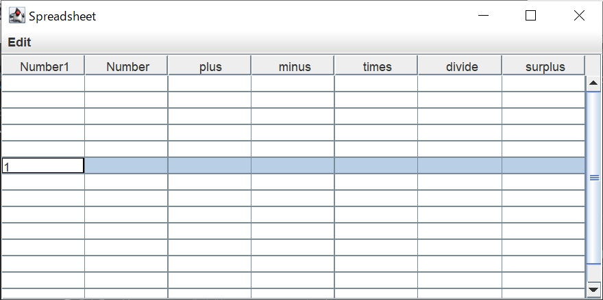 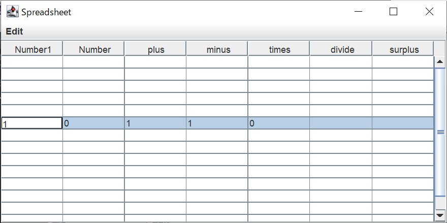 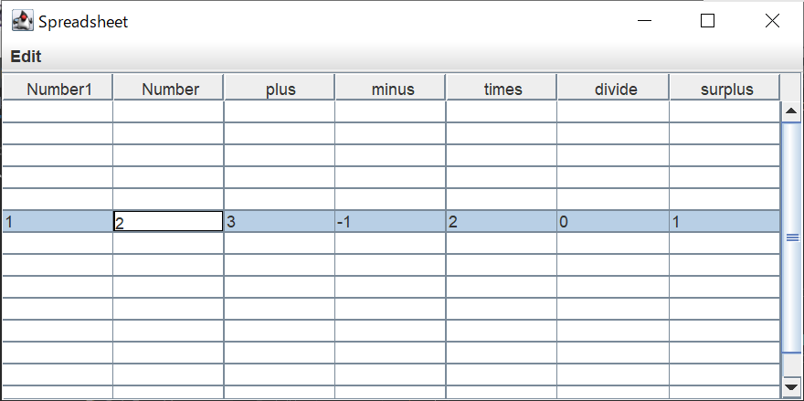 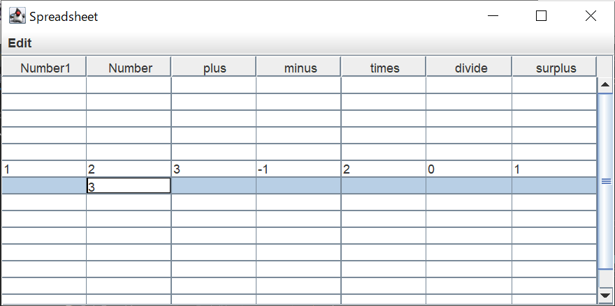 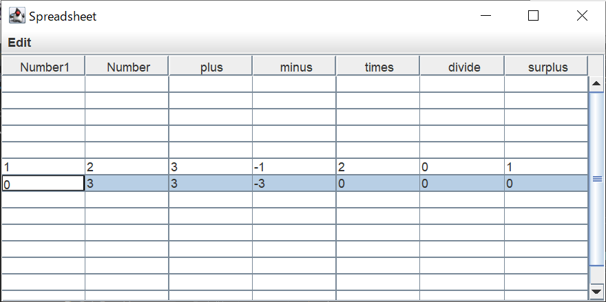 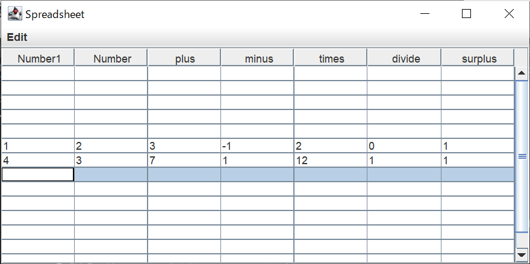またメニューバーの仕様として行の挿入と削除、移動も実装した。計算するだけでは、Excelの影響が強いとおもたので、表であることを活かしExcelにはないような機能も追加したかった。追加した機能の3つもExcelでも使えてしまうものだったが、javaのswingを生かした機能になっていると思う。
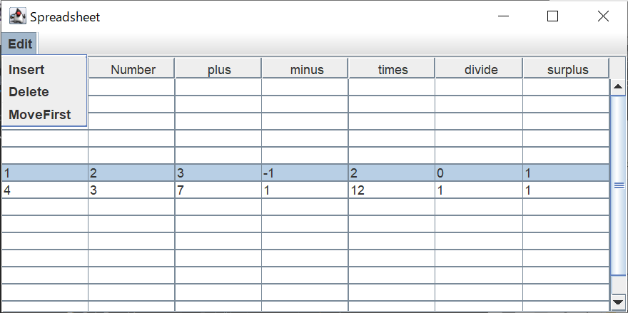 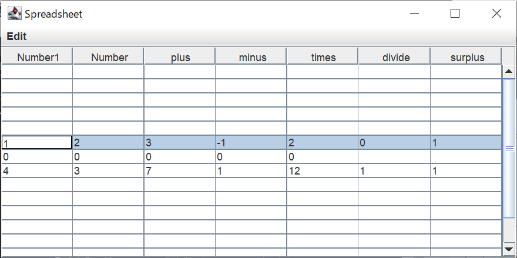 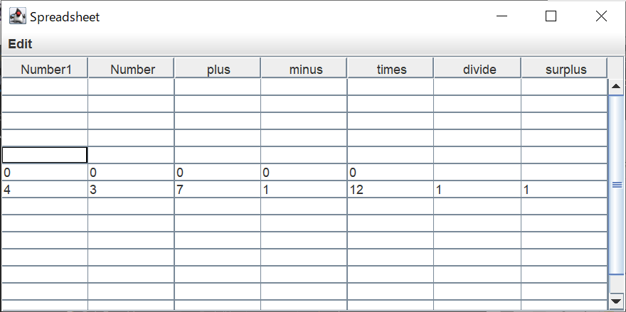 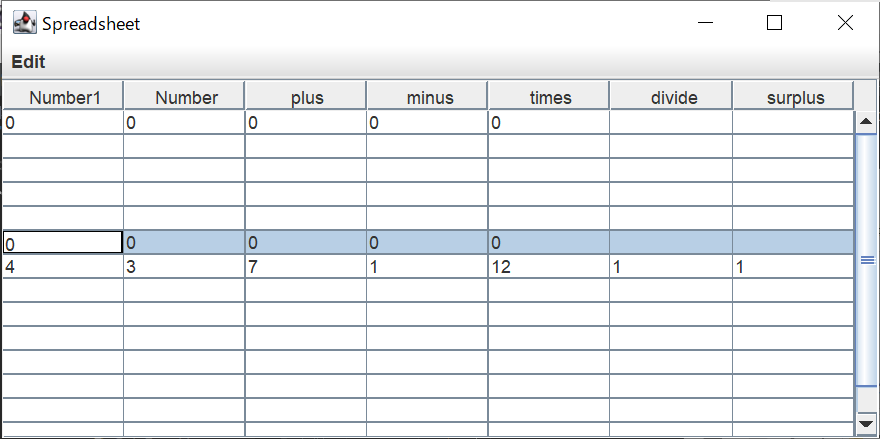プログラムのポイントとしては、授業でも習ってないようなメソッドを自分で調べて実装した点です。四則演算だけでなく剰余計算も実装した点。計算だけでも良かったのだが表であることから、行の追加、削除、移動も可能にした。移動は1行目にしかできないため煩雑ではあるけれど、表の整理をできるようになった。TableModelLisnerを見つけられたのは良かった。このリスナーのおかげで、プログラミングっぽくなったと思う。